“City Guide” Documentation by “dmb TEAM” v1.1
“City Guide”
Created: 15.07.2015
Updated: 03.08.2015
By: dmb TEAM
Thank you for purchasing our android application. If you have any questions that are beyond the scope of this help file, please feel free to email us via the Contact Form here. Be sure not to contact us via email, if you already posted a comment or vice versa. Posting duplicate requests won't speed up, but will slow down the process of getting reply.
Important
What stays behind Support:- Responding to questions or problems regarding the item and its features
- Fixing bugs and reported issues
- Customization and installation services
- Support for third party software and plug-ins
Table of Contents
I. How to configure/set up the project?
II. How to Customize "City Guide"?
- Settings
- Translate / Change the texts
- How to Customize the Application Icon?
- Google Places - How to get Google API Key?
- Useful tutorials
- FAQs
I. How to configure/set up the project?
1. What tools you need? - top
The product is created within Android Studio IDE. You can download it from here: Download Android Studio.. In addition, on this page you can find useful information how the IDE is working, features, system requirements, tutorials and so on.
2. Import the project into Android Studio - top
Step 1: Extract the content from the .zip file that you've just downloaded from CodeCanyon. Then start Android Studio and when you see the Welcome to Android Studio screen click on Open an existing Android Studio project

Step 2: After that you will get a pop-up and you should locate where you extracted the .zip file. Select the root directory:
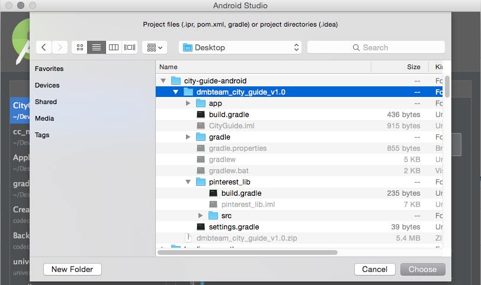
Step 3: When you click the OK button, you will see another pop-up (if you have already used Android Studio, this dialog won't show up), where you should check the Use local gradle distribution option. And here you should locate where is your local Gradle distribution. Of course you should download it first from here. When you are ready, click Ok
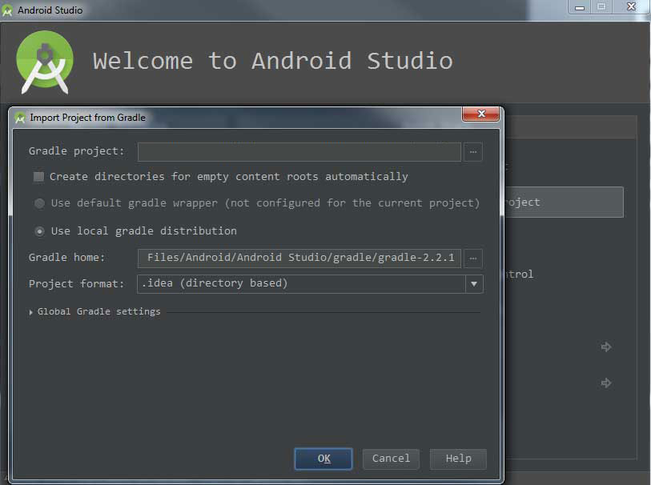
Step 4: After Step 4, you will see the 1st screen below. Just click on the Project and you will see the project's structure (2nd screen below):

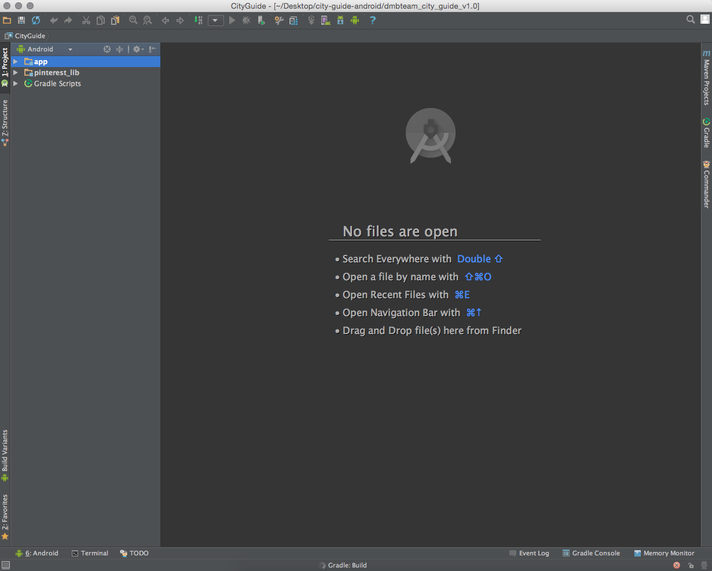
Step 5: We can perform quick test, if everything is ok by selecting the app folder on the left and clicking the green Run button. This way we will launch the app on a Emulator or real device, if you have connected it to your machine. Currently we don't have real device connected (as we can see from the dialog), so we will run it on a Emulator Nexus 5 API 21 x86.
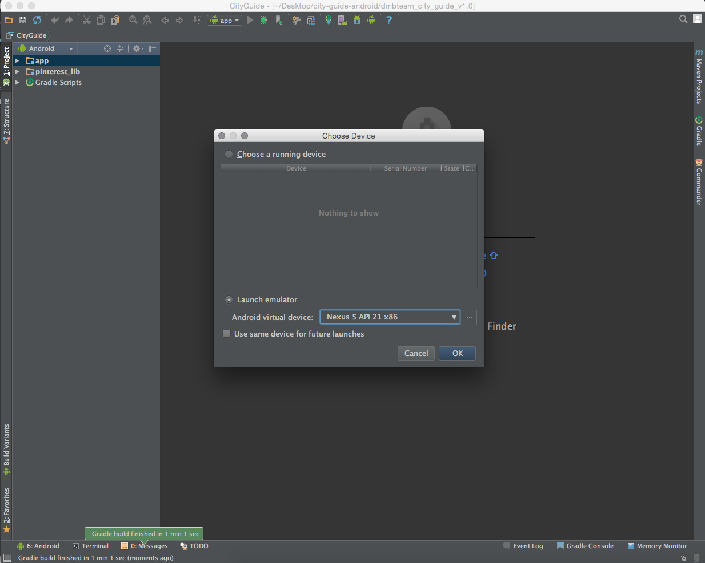
That's it. You are ready to continue with the customization.
II. How to Customize "City Guide"
1. Settings - top
The main settings of the app are place within the AppSettings.java class. It can be found within the app/java/com.dmb.cityguide/settings folder:
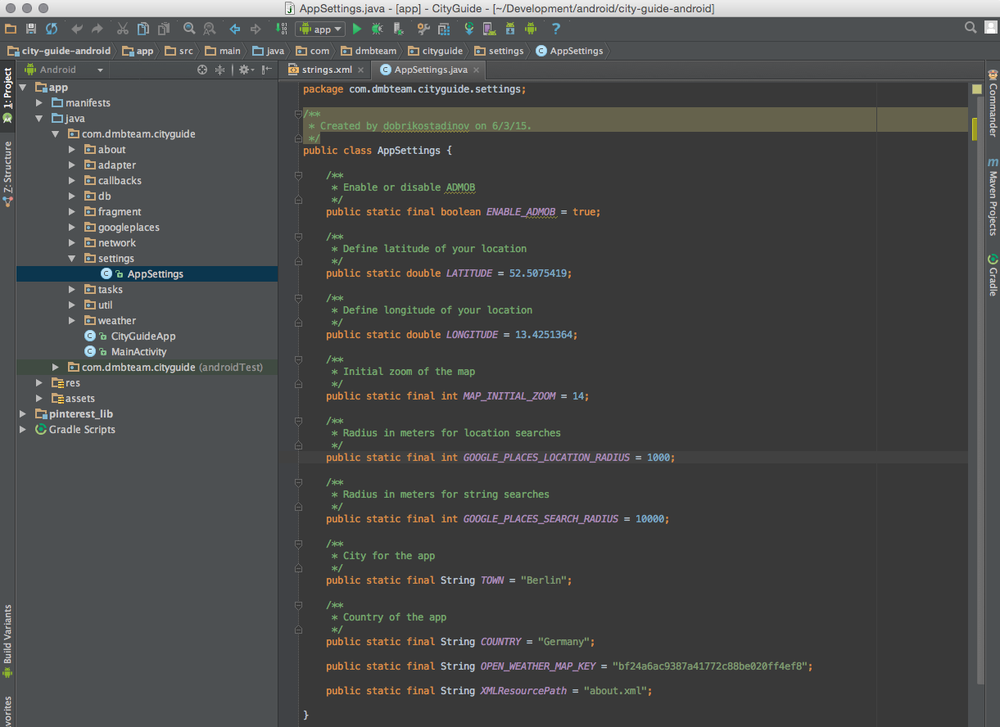
There you will see several constants, which are defined:
- public static final boolean ENABLE_ADMOB = true; - Enable/Disable AdMob Ads. If you want to disable them, just set the value from true to false. If you want to receive real ads, but not test ads, you have to get your unique AdMob ID and to put it within strings.xml file. Currently the app is using a test AdMob ID, which only receives Test Ads.
- public static final double LATITUDE = 52.5167; - Latitude coordinate of the desired city (example: Berlin Latitude).
- public static final double LONGITUDE = 13.3833; - Longitude coordinate of the desired city (example: Berlin Longitude).
- public static final int MAP_INITIAL_ZOOM = 14; - Defines the initial map zoom.
- public static final int GOOGLE_PLACES_LOCATION_RADIUS = 1000; - Radius in meters for location searches.
- public static final int GOOGLE_PLACES_SEARCH_RADIUS = 10000; - Radius in meters for string (textual) searches.
- public static final String TOWN = "Berlin"; - The label of the city, which is displayed on the Home Screen.
- public static final String COUNTRY = "Germany"; - The label for the country, which is displayed below the city label on the Home Screen.
- public static final String OPEN_WEATHER_MAP_KEY = "bf24a6ac9387a41772c88be020ff4ef8"; - Your OpenWeather Map Key.
- public static final String XMLResourcePath = "about.xml"; - The name of the XML file, which will be used for displaying the information on the About Screen.
1.1. How to get the Latitude and Longitude coordinates?
You can directly take those coordinates using the Google Maps. Just open Google Maps with your browser and search for the desired city. For example, if you search for Berlin, the URL within the browser will change to the following:
URL: https://www.google.bg/maps/place/Berlin,+Germany/@52.5075419,13.4251364,11z/data=!3m1!4b1!4m2!3m1!1s0x47a84e373f035901:0x42120465b5e3b70?hl=en
The red colored numbers (divided by comma) are the Latitude (1st one) and the Longitude (2nd one). Just copy those values and paste them within the AppSettings.java file. This way, the app will display the places within that city.
After the coordinates, you should change the labels (Town and Country) from within the AppSettings.java file. So, if you want to use the coordinates for Munich, you should change the town label to Munich and the country label to Germany.
Or you can use the following online tool the get the coordinates: http://www.mapcoordinates.net/en
1.2. How to get the OpenWeather Map Key?
You have to register to http://openweathermap.org/ and following this TUTORIAL to get your Key and to enter it within the AppSettings.java file. This way, the app will get the weather forecast for the desired city.
1.3. How to get Google Analytics ID?
Step 1: Open http://www.google.com/analytics/ and Sign In to Google Analytics
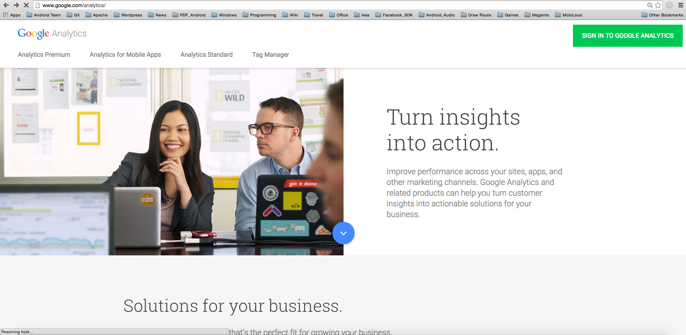
Step 2: Once you have signed, go to Admin
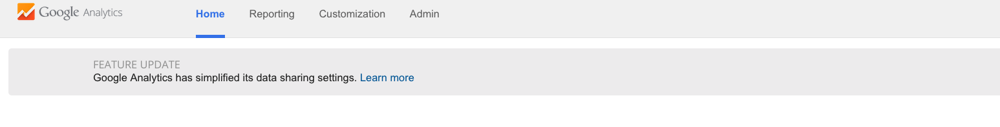
Step 3: Click Create new account
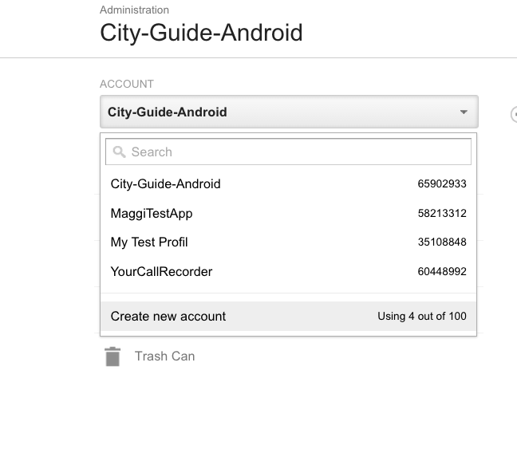
Step 4: Select Mobile app.
Step 5: Enter the App Name.
Step 6: Select an Industry Category and the Reporting Time Zone
Step 7: Click Get Tracking ID.
Step 8: Paste the ID to the strings.xml file (string name "tracker_id").
--> Additonal Tutorials for Google Analytics: https://support.google.com/analytics/answer/1042508
1.4. How to edit the About Screen?
About Screen data is controlled by the following XML file: app/assets/about.xml.
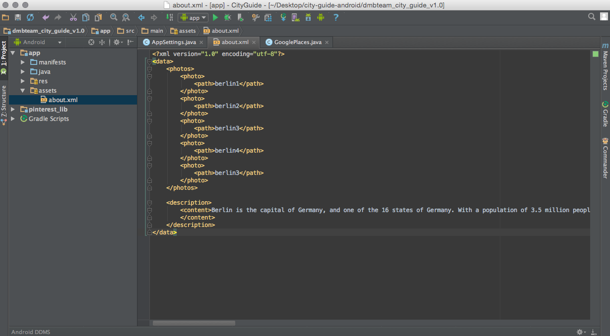
To edit the content, just open the file within Android Studio and you will see that there two main sections. The first one is photos and the second one is description. The photos section can contain multiple photo elements, where each photo has a child element path. Just edit the path content with the name of the image file that you want to see within the About screen. Of course, first you have to create the image to to place it within the project's folder app/res/drawable-xxhdpi. If you want to add more images, just copy and paste a photo item:
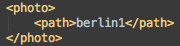
Please note that you should skip the file extension. So if the image file is berlin1.png, you should enter within the path only the berlin1 text. Plus, you should use PNG images.
For the About Screen's textual content, just replace the Berlin's description text with yours within the content item.
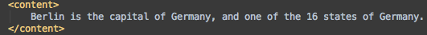
2. Translate / Change the texts used within the template - top
All of the used texts are stored within a single .xml file, named strings.xml, which can be found here app/ress/values/strings.xml
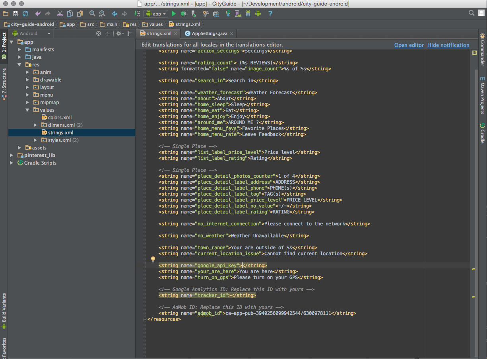
Available strings for customizations:
- name="app_name" - enter the desired app name, which appear below the app icon.
- name="action_settings" - Settings label, but it's used only for demonstration, not in the real product.
- name="rating_count" - reviews label for the Reviews Screen.
- name="image_count" - the label for the picture.
- name="search_in" - search label.
- name="weather_forecast" - Weather forecast label
- name="about" - About label on the Home Screen
- name="home_sleep" - Sleep label on the Home Screen
- name="home_eat" - Eat label on the Home Screen
- name="home_enjoy" - Enjoy label on the Home Screen
- name="arround_me" - Around Me Button label on the Home Screen
- name="home_menu_favs" - Label for the favorites places within the Overflow Menu (behind the three dots icon)
- name="home_menu_rate" - Label for the feedback item within the Overflow Menu (behind the three dots icon)
- name="list_label_price_level" - Label for the price level text within List of Places Screen
- name="list_label_rating" - Label for the rating text within List of Places Screen
- name="place_detail_photos_counter" - dummy label for the pictures count
- name="place_detail_label_address" - Address section label
- name="place_detail_label_phone" - Phone(s) section label
- name="place_detail_label_tag" - Tag(s) section label
- name="place_detail_label_price_level" - Price Level section label
- name="place_detail_label_no_value" - Text to be displayed, when there is no data
- name="place_detail_label_rating" - Rating section label
- name="no_internet_connection" - Error message, when there is no internet
- name="no_weather" - Error message, when there is no weather service
- name="town_range" - Toast message, when you are outside of the city boundaries
- name="current_location_issue" - Toast message, when your GPS is switched off or there is other reason, which prevents the app to locate you
- name="google_api_key" - your google maps private key - check here how to get the key
- name="your_are_here" - Dummy text for presenting your position
- name="turn_on_gps" - Toast message to remind you to turn your GPS on
- name="tracker_id" - Your Google Analytics ID
- name="admob_id" - Your AdMob Ads ID
Just change the texts between the string element, marked with red: <string> TRANSLATABLE_TEXT </string>.
3. How to customize the Application Icon - top
The app uses, as application icon, the following image files for the different resolutions:
- app/src/main/res/drawable-xxxhdpi/ic_launcher.png - 192x192 pixels
- app/src/main/res/drawable-xxhdpi/ic_launcher.png - 144x144 pixels
- app/src/main/res/drawable-xhdpi/ic_launcher.png - 96x96 pixels
- app/src/main/res/drawable-hhdpi/ic_launcher.png - 72x72 pixels
- app/src/main/res/drawable-mdpi/ic_launcher.png - 48x48 pixels
Here is the example of the application icon (CityGuide - 3rd item on the 2nd row):
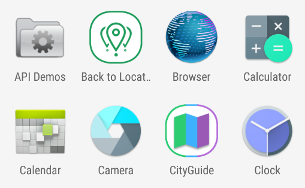
So you have to create your own application icon and to replace the default one. The sizes for the different resolutions, the file name (ic_launcher) and the file extension (.png) MUST be the same..
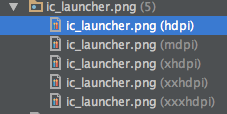
For best epxerience, you have to create all of them and to place the file within the needed folder, e.g. drawable-mdpi, drawable-hdpi, drawable-xhdpi, drawable-xxhdpi and drawable-xxxhdpi. Of course you can always provide the biggest size (e.g. 192x192 pixels, within the drawable-xxxhdpi folder) and Android OS will take care to scale down the icon for the different resolutions.
4. Google Places - How to get Google API Key? - top
In order to enable Google Places functionality (which is the base of the app), you need to provide Google Places Key. You need to paste it in the strings.xml, wthin the key google_api_key.
Procedure to get the key:
- Visit the following URL: https://code.google.com/apis/console
- Sign In
- From the top dropdown, create New Project
- Open the project by selecting it from the same dropdown
- From the left menu choose APIs & Auth -> APIs
- Select the API: Google Maps Android API and click Enable API
- Do the same thing from 6 for these APIs: Google Places API for Android, Google Places API Web Service
- Plus, enable Social APIs -> Google+ API
- Again from the left menu choose Credentials -> Create new Key. Select Android Key and choose create, without enter anything in the text field. You can see your API Key after that in the same (credentials) menu.
5. Useful tutorials - top
5.1. How can I change the package name? - you need to do it, before uploading the app to Google Play Store.
5.2. How to export certified apk file for Google Play Store (Official Documentation) or Stackoverflow thread
5.3. Launch Checklist for Google Play Store
5.4. Publishing Android Application (Official Documentation).
6. FAQs - top
You can always check the product's Support Tab section (at CodeCanyon.net), where you can find a lot of already answered questions and solved issues. Plus, you can benefit from the Comments section (at CodeCanyon.net), where we've replied to a lot of questions too.
"City Guide" by dmb TEAM